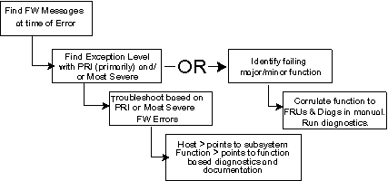

Proprietary to General Electric
Direction 5181166-800, Rev# 7
BrightSpeed Select Service Methods Adv
Proprietary to General Electric |
The fields in the run time error serve as road signs for fault isolation and are used as shown here.
GE SYSLOG (OPERATOR, SERVICE, SUPPORT)
Date Time
Suite:Suite name Host:Host name Proc:Process name Error:Error #
(File: File name Method: Method name Line#: Location ID )
Function: Major : Minor Function
Scan/Image Type:Scan/image Type Scan:Scan Specifics Image:Image Specifics
Exception Level: level/flag Ticks: ticks Log Series: #####
--- Message Text Body ---
Illustration 1: Utilizing Error Messages for Troubleshooting

Error Log Field descriptions are summarized below:
Date and Time - date and time that the error message enter the error message log, NOT the time the error occurred.
Suite name - name of suite.
Host name - This is the name of the host processor (OC, STC, ETC, OBC) of the firmware that detected the error.
Process name - Name of process that detected the error.
Error Number - Unique error identification. Can be used for sorting, searching, and counting specific errors in error log. Can also be used as a pointer in documentation.
File name, Method name, Line # - Does not appear when using the service view level
Function - hierarchical breakdown of system functions uses major and minor functions.
Scan - exam, series, scan # for raw file.
Image - exam, series, image # for image file.
Type - Scan type, that is, axial, scout, helical, cine, diagnostic.
Exception Levels:
Primary = first error reported in a group of error messages.
Secondary = rest of the errors in a group.
Most Severe = message that has the most severe scanner exception handling consequences in a group of errors.
Soft = errors that have no effect on exception handling, but indicate system parameters that are beginning to approach the boundaries of satisfactory performance.
Ticks - Ticks will indicate real error occurrence order (clocks are synchronized).
Log Series - relates all errors recorded as part of a verification series.
Message Text Body - Specific and detailed information concerning the error including.